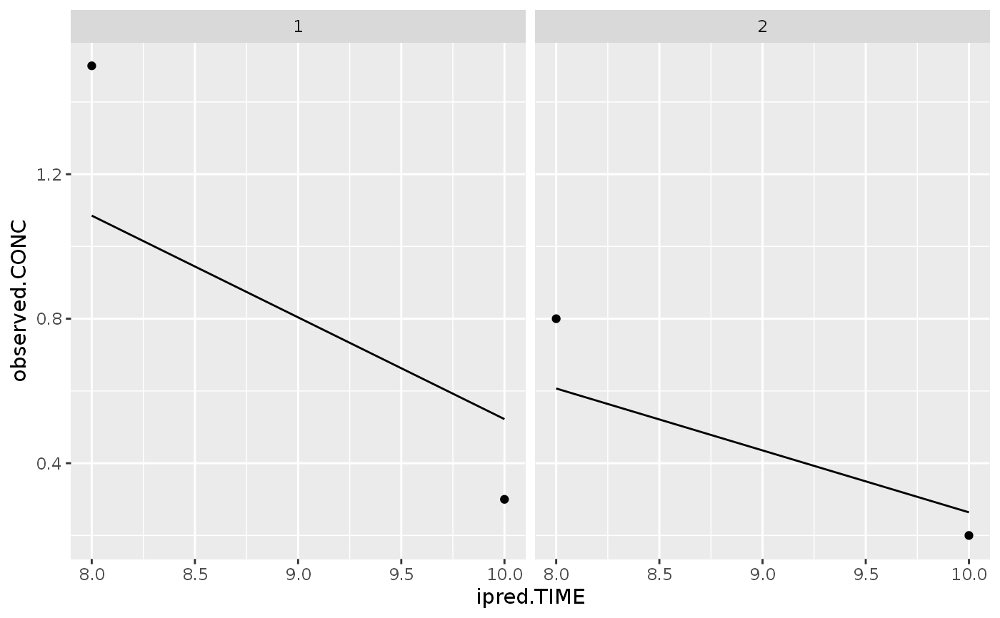

R/proseval.R
posthoc.RdFind the individual parameters for a set of virtual subjects in a population, either based on all available data (posthoc), or including data piece-wise as time progresses (proseval).
posthoc( x, ..., .fit = "fit", .prediction = "ipred", .elapsed = "elapsed", .id = "ID" ) proseval( x, ..., .fit = "fit", .prediction = "ipred", .elapsed = "elapsed", .obs = "OBS" )
| x | a tbl with one or multiple rows Each column from the tbl will be mapped to the `estimate()` function. You can generate such a tbl using data functions. |
|---|---|
| ... | additional arguments to add to each `estimate` call. If an argument is present both here and in x, the argument here takes precedence. |
| .fit | Either a string or NULL. If a string, the output will contain a column with that name, storing the fit |
| .prediction | Either a string or NULL. If a string, the output will contain a column with that name, storing the predicted values for that fit |
| .elapsed | Either a string or NULL. If a string, the output will contain a column with that name, storing the required computation time (`System.time`) for that fit |
| .id | column with the subject ID (to be ignored when calling `estimate`) |
| .obs | Either a string or NULL. If a string, the output will contain a column with that name, describing how many observations were taken into account |
a tibble with the requested columns for each fit
The proseval tool calculates a prospective evaluation, and therefore creates multiple outputs per input row. If N is the number of observations, it will calculate N+1 fits. The first fit will be the population fit (not using any observations). The next fit will only use one observation. The next fit will use two observations. And so on.
Please note that ipred incorporates all time-varying covariates, even if these may be considered to be "in the future".
#>require(ggplot2) data <- dataTibble( object=getModel("example"), observed=data.frame(ID=c(1,1,2,2), TIME=c(8,10,8,10), CONC=c(1.5,0.3,0.8,0.2)) )#>#>fit <- data %>% posthoc(regimen=data.frame(TIME=0, AMT=1000)) fit %>% tidyr::unnest(c(observed, ipred), names_sep=".") %>% ggplot(aes(x=ipred.TIME)) + geom_point(aes(y=observed.CONC)) + geom_line(aes(y=ipred.CONC, group=ID)) + facet_wrap(~ID)